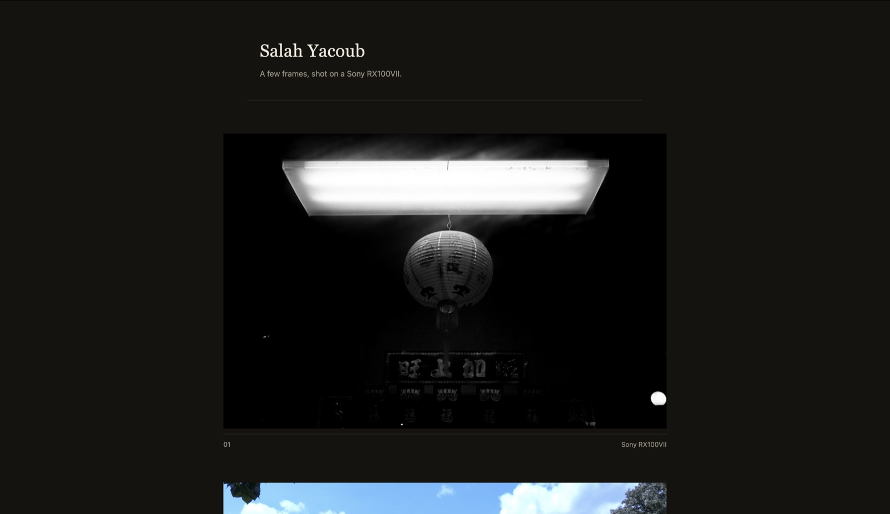
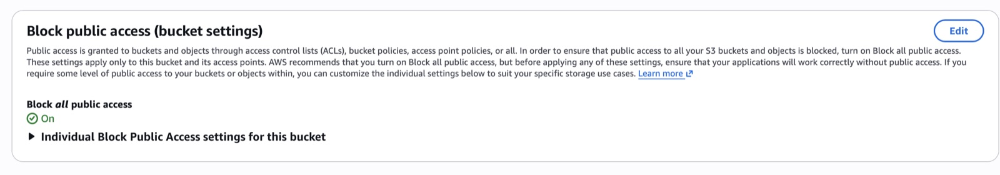
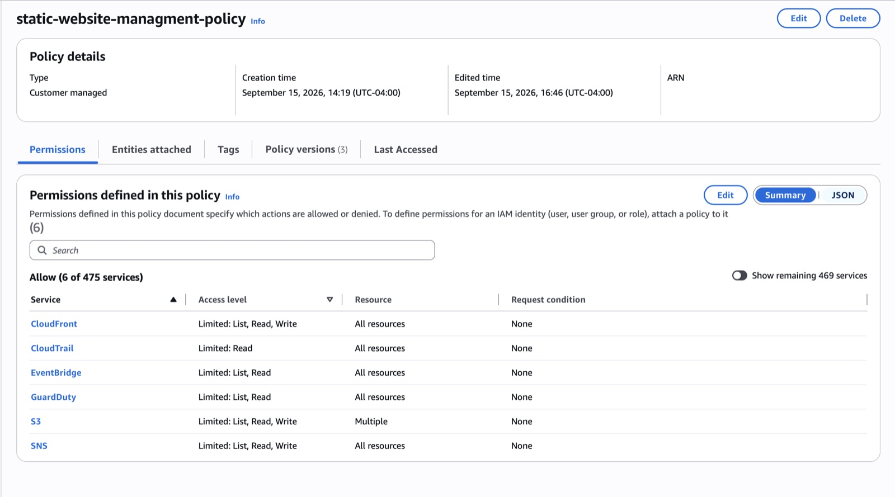
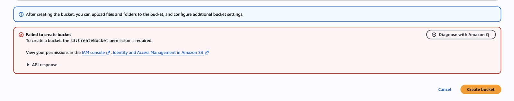
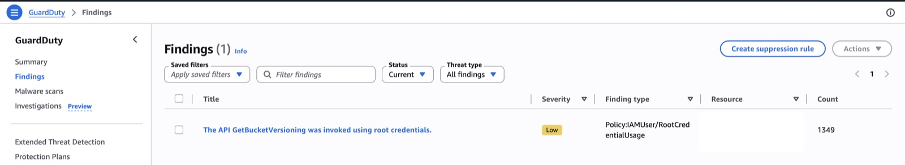
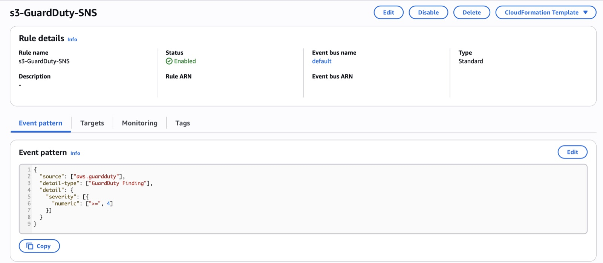
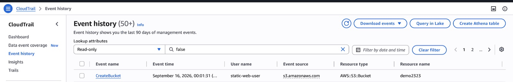

Overview
Most beginner AWS projects stop at "host a static site on S3." I wrapped the hosting layer in the controls used in production environments:
- a private origin
- least-privilege access
- full audit logging
- automated threat detection with real-time alerts
What I built
- Private origin: an S3 bucket with all public access blocked, served only through CloudFront using Origin Access Control scoped to a single distribution.
- Encryption in transit: CloudFront redirects every HTTP request to HTTPS.
- Audit logging: CloudTrail captures management and data events, encrypted with a customer-managed KMS key and with log file validation for tamper detection.
- Detection and response: GuardDuty monitors the account. An EventBridge rule filtered to Medium/High severity sends findings to SNS as an email alert.
Security
I wrote a custom IAM policy for my working user. It allows only GetObject, PutObject, DeleteObject and ListBucket, scoped to this bucket's ARN, with no wildcard actions or resources and no AdministratorAccess. To verify it, I confirmed that an out-of-scope action was denied.
Challenges
GuardDuty raised a real finding during development: Policy:IAMUser/RootCredentialUsage, meaning an API call had been made with root credentials. I traced it to leftover activity from initial setup. I then moved all ongoing work to the dedicated least-privilege IAM user and took root out of routine use.
What I learned
Security controls only count if you verify them. Watching my own alert pipeline catch a real issue taught me more than any sample finding. Next, I want to rebuild the stack with Terraform so it's reproducible from a single apply.
Gallery






